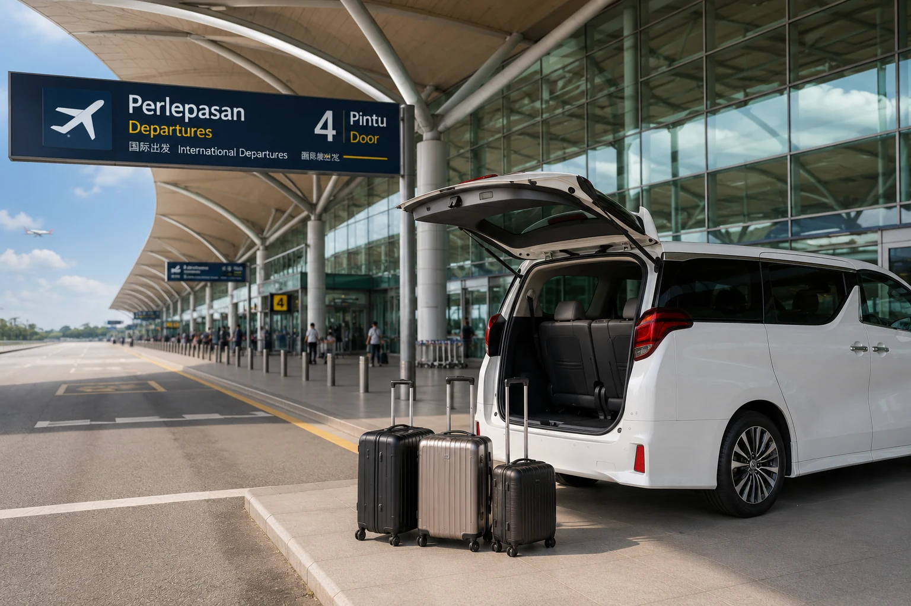
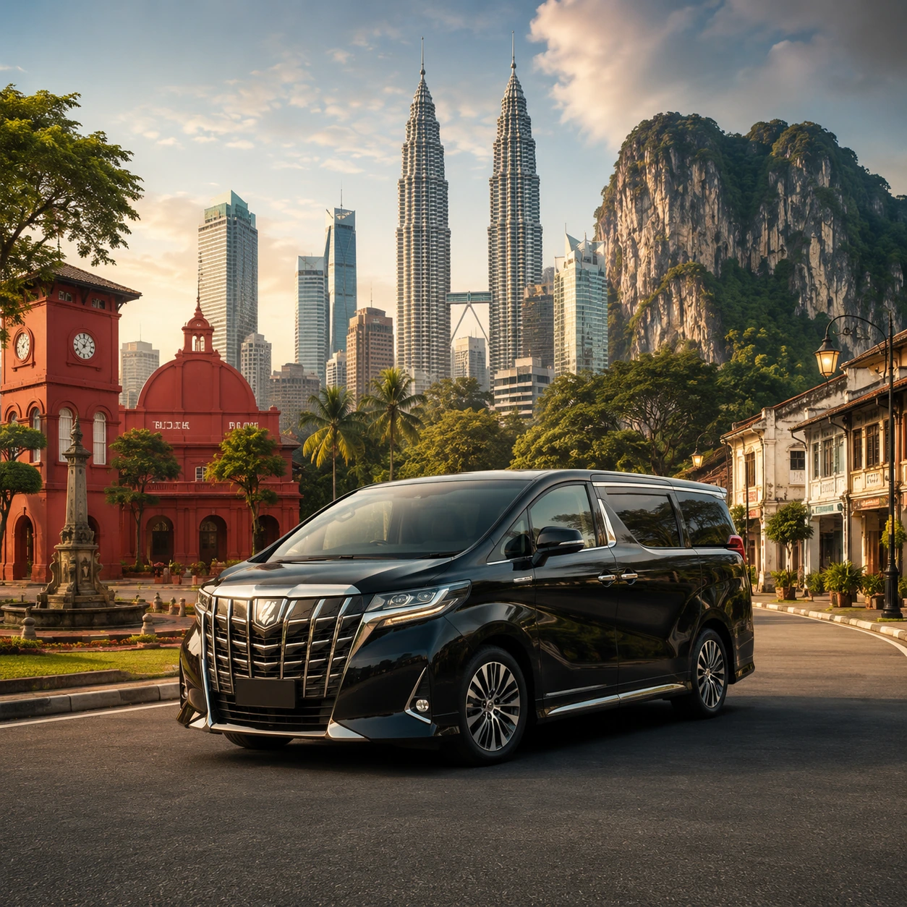
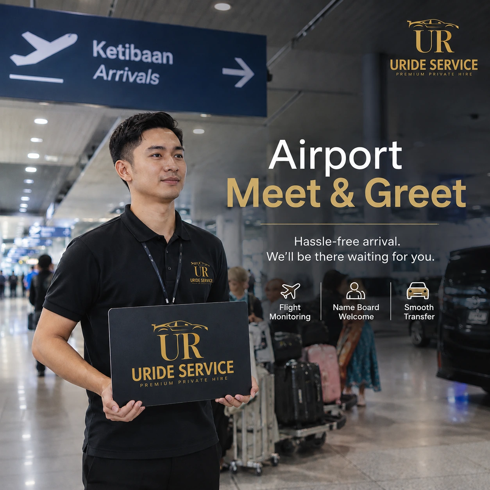

Airport ready
Airport readySilver
Toyota Corolla Cross
A smart private travel option for airport, interstate, charter, and tour journeys.
Enquire on WhatsApp →Ipoh's private transfer specialist
Premium private transfers between Ipoh, KLIA and beyond.

Service overview
Premium private transport for airport transfers, interstate travel and day trips.
Airport & private travel
From airport departures to private days out, every trip is arranged with the same care and attention.
 DEPARTURES · KLIA T1 / T2KLIA / KLIA2 transfersAirport TransferPrivate airport transfer with doorstep pickup and direct terminal drop-off.View Airport Fares →
DEPARTURES · KLIA T1 / T2KLIA / KLIA2 transfersAirport TransferPrivate airport transfer with doorstep pickup and direct terminal drop-off.View Airport Fares →

POINT-TO-POINT · LONG DISTANCEInterstate TransferComfortable point-to-point private transfers from Ipoh across Malaysia.View Destinations → PRIVATE HIRE · YOUR SCHEDULEPrivate CharterA dedicated vehicle and driver for business, family, or special occasions.Explore Charter →
TRAVEL EXPERIENCES · PRIVATEDay ToursFlexible private outings shaped around the places you want to experience.Explore Tours →
PRIVATE HIRE · YOUR SCHEDULEPrivate CharterA dedicated vehicle and driver for business, family, or special occasions.Explore Charter →
TRAVEL EXPERIENCES · PRIVATEDay ToursFlexible private outings shaped around the places you want to experience.Explore Tours →

ARRIVALS · TERMINAL WELCOMEMeet & GreetA reassuring welcome and a smooth handover from arrival to vehicle.View Service →Airport transfer, refined
Early flight, late arrival, or family holiday—we make the long airport journey feel straightforward.

Most Popular Airport Route
Private, door-to-door airport travel with three vehicle choices for different passenger and luggage needs.
View Featured RouteOur fleet
Choose a comfortable vehicle for solo travel, family trips, or larger groups with luggage.
Airport readySilver
A smart private travel option for airport, interstate, charter, and tour journeys.
Enquire on WhatsApp → Chauffeur comfort
Chauffeur comfortWhite
A premium private hire experience for airport journeys, business travel, and special occasions.
Enquire on WhatsApp → Group travel
Group travelBlack
A modern and spacious private travel choice for families and groups.
Enquire on WhatsApp →Luggage capacity may vary depending on passenger count, luggage size and arrangement. Please contact us if you are travelling with multiple large suitcases.
Optional travel comfort
A small extra for a more comfortable family journey.
Curated private journeys
Discover Ipoh, Penang or Kuala Lumpur in the comfort of a private journey shaped around your pace.
Simple from the start
Tell us your pickup, destination, date, group, and luggage.
We’ll recommend a vehicle and confirm your journey details.
Meet your driver and enjoy a smooth, private journey.
Why URide
Professional private transport should feel personal, dependable and uncomplicated.
Drivers familiar with Ipoh, airport routes, and interstate travel.
No shared ride or unnecessary stops—just your group and destination.
Trip details are confirmed directly so you know what to expect.
A considered fleet for different passenger and luggage needs.
Good to know
Need something specific? Send us your trip details and we’ll help.
Advance booking is recommended, especially for weekends, public holidays, and larger vehicles. Contact us with your travel date to check availability.
We arrange transfers for both KLIA Terminal 1 and Terminal 2. Include your flight details when requesting a quote.
Share your passenger count and approximate luggage. We’ll recommend the most suitable vehicle based on space and comfort.
Yes. Tell us where you would like to go, your preferred schedule, and group size for a tailored quote.
FLIGHT DAY READY · 24/7 ENQUIRY
Share your pickup, destination, travel date, passengers, and luggage with us on WhatsApp.